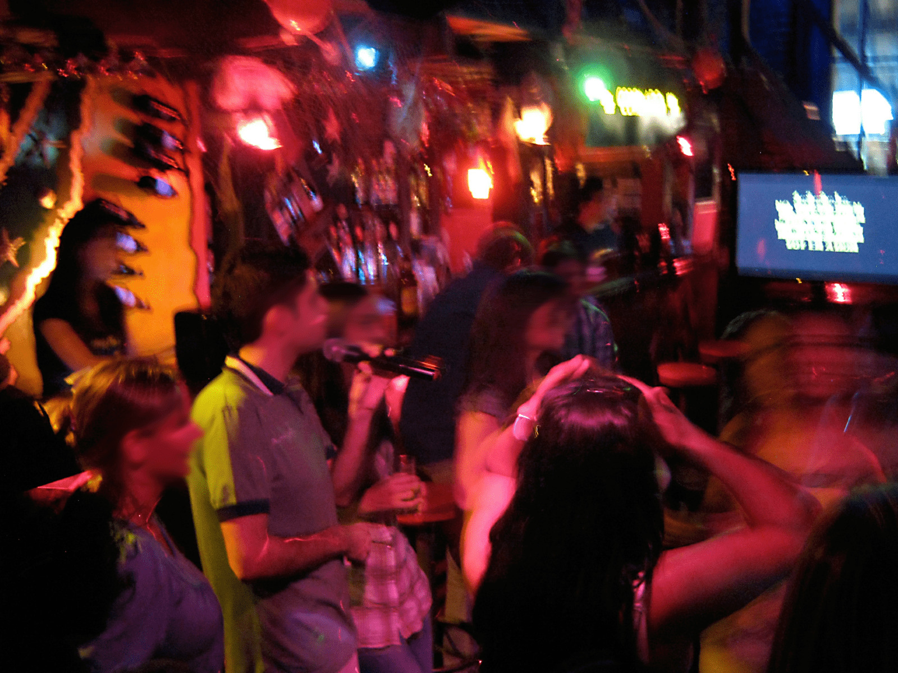
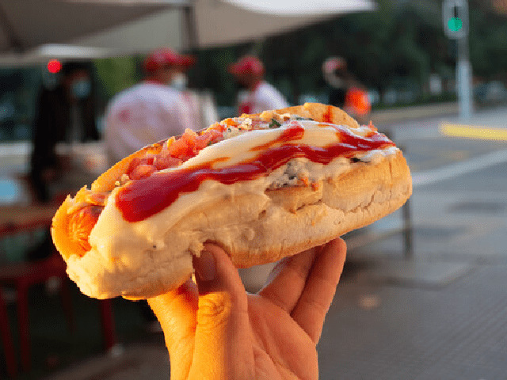
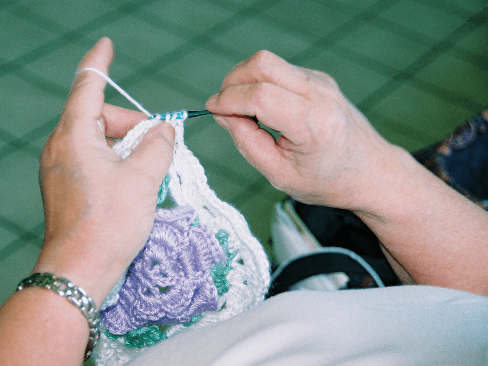
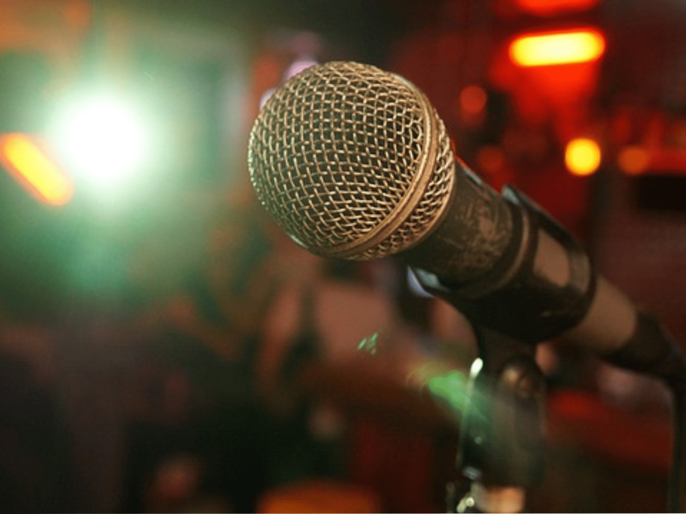
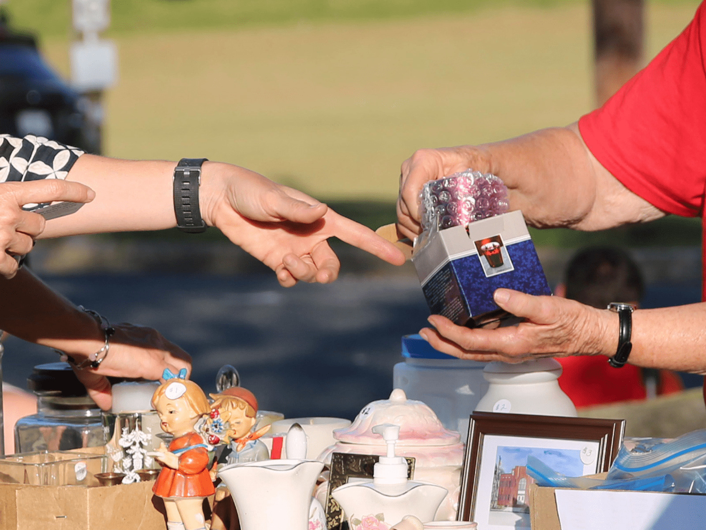

| 08-04-2022 20:00 |
09-04-2022 02:00 |
Santiago |
Beauchef 850, cancha. |
Reunión estudiantil |
 |
| 08-04-2022 16:30 |
08-04-2022 18:30 |
Talca |
Patio de Comidas "Donde Manolito" |
Degustacion de Completos |
 |
| 11-04-2022 10:00 |
11-04-2022 12:00 |
Santiago |
Centro Cultural Gabriela Mistral, acceso metro. |
Taller de crochet básico |
 |
| 07-04-2022 20:00 |
07-04-2022 22:00 |
Providencia |
Gran Refugio Bar Stand Up Comedy, Tomás Andrews 085. |
Noche de Stand-up Comedy para principiantes |
 |
| 09-04-2022 10:00 |
09-04-2022 14:00 |
Santiago |
Plaza Panamá, Martínez de Rozas 2230. |
Feria de las pulgas |
 |